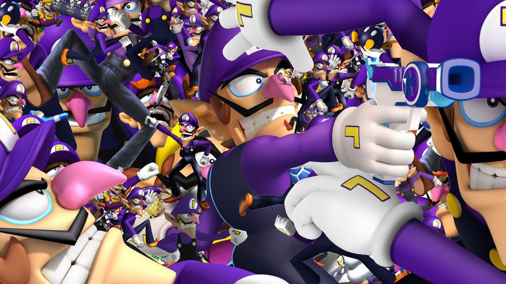
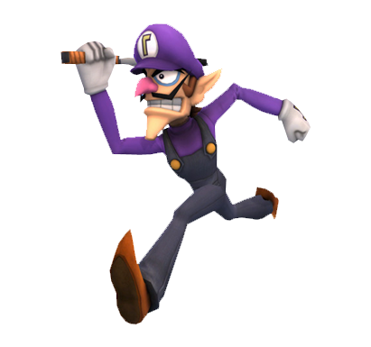
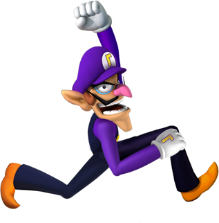
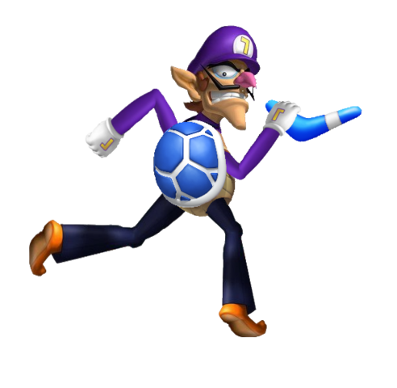

Join us in recognizing and appreciating the true hero of the Mario universe. WAAAA!

Waluigi info-section

Waluigi in Wii U/3DS

Waluigi posing

Boomerang Waluigi
Waluigi and Wario
"Waluigi is the ultimate example of the individual shaped by the signifier. Waluigi is a man seen only in mirror images; lost in a hall of mirrors he is a reflection of a reflection of a reflection. In a world where our identities are shaped by our warped relationships to brands and commerce we are all Waluigi."